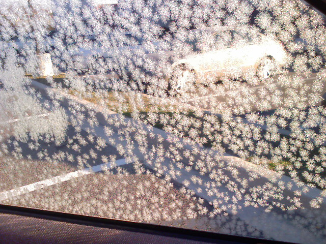
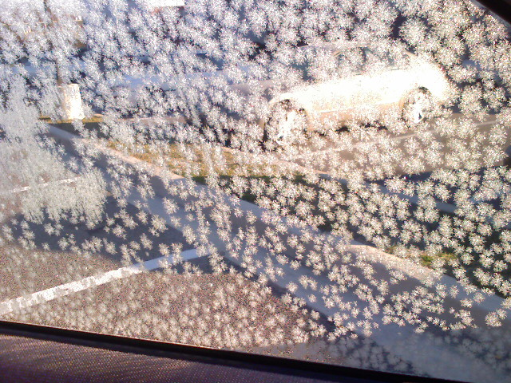
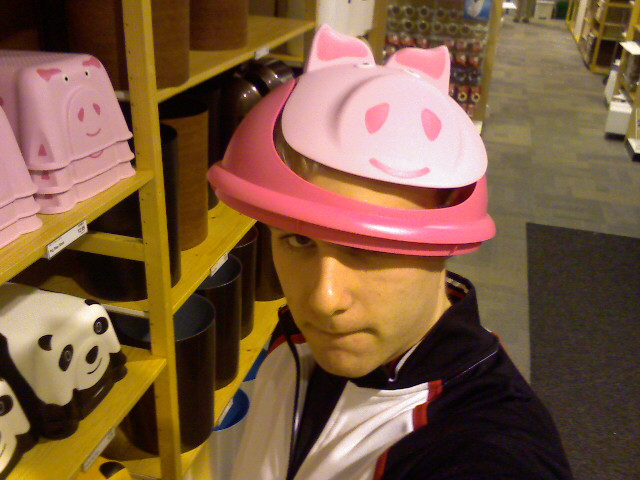
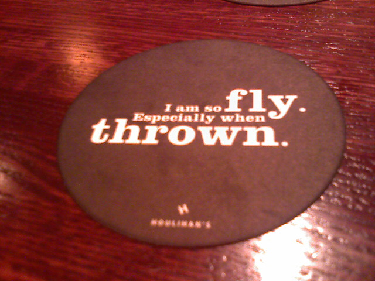
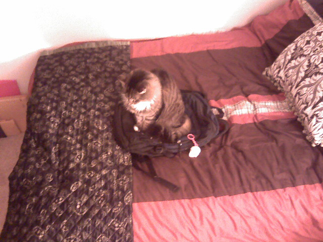

Frosty Car Window

It was cold last night leaving these little snowflake shaped frost on my car window this morning.


It was cold last night leaving these little snowflake shaped frost on my car window this morning.
Sure, the game seems simple enough; repeat the pattern that Simon spits out at you. But have you ever seen someone beat Simon?
Well, now you have.
It’s hard to imagine being somewhere that locks down the web browser so much that you have to resort this nifty trick I read on DownloadSquad.com, but desperate times call for desperate measures. If you can’t reach the web through Internet Explorer due settings beyond your control and forgot your portable Firefox thumbdrive then simply open up the calculator or MS Paint and click “Help”. From there go to “Help Topics,” which will bring up a help window. Now all that is left is to right click on the title bar and select “Jump To URL.” Type in any web address you like, but make sure to include “http://” at the beginning and you should be good to go.

What you are basically looking at is a stripped-down, basic version of Internet Explorer which is built into Windows and used to display CHM files, or Microsoft Compiled HTML Help files. Sure there are no niceties like bookmarks or your comfy, cozy Firefox extensions, but if you need to check your e-mail or Twitter account and this is your only resort, you will put up with a little cruft in order to get your stuff. Besides there are back and forward buttons, what else do you need in a browser?
Scientists from the Smithsonian Institution used motion sensitive cameras to capture the wildlife along the Appalachian Trail near Shenandoah National Park, Virginia. The goal of the project is to document animal traffic on the nearly 600 mile stretch of the 2,175 mile trail that runs from Georgia to Maine.

Most of the pictures were taken at night due to human traffic during the day. Animals depicted
vary between black bear, deer, coyotes, and even a rare Bobcat. It is awesome to see local wildlife captured in their natural settings along a trail I hiked as a kid.
See the Washington Post photo gallery, ‘Animals at Night‘ or read more about it.
(via Dad)
I just joined the official Zune group on Facebook the other day and when I looked at the number of fans I saw this…

I’m sure lots of Zune haters will get a kick out of any reference to Hell and the Microsoft device. I am actually a fan and my review will be coming in a couple of days.
CoinCalc.com is a simple and straight forward site aiming to estimate how much moola you have stashed away in your change jar. All you need to do is weigh your jar of coins, grab a handful as a sample and enter the quantity of each coin you pulled out into the CoinCalc form. The site does a little math and guesses how much money is in the jar based on your sample.

I just happened to have a jar full of coins that needed to be tallied and wrapped up so I though I would give CoinCalc.com a run for it’s money (pun intended). I took 5 samples of various sizes from the same cup of coins. After counting the number of coins I would put them all back in the cup and shake them around to keep it as fair of a test as possible. I happen to have a small postal scale at hand so calculating the weight of the coins was a snap. My first weighing included the weight of the cup which came to a total of 3.375 pounds. After running all of the numbers through CoinCalc.com, I realized the weight of the cup was inflating the estimate. I weighed the empty cup and subtracted that weight from the previous weight resulting in 2.8625 pounds of pure coinage. The results are summarized in the table below:
| Sample | Pennies | Nickels | Dimes | Quarters | Estimated Total | Estimated Total w/o Cup |
|---|---|---|---|---|---|---|
| 1 | 36 | 0 | 10 | 20 | $43.07 | $36.53 |
| 2 | 23 | 4 | 3 | 9 | $33.71 | $28.59 |
| 3 | 16 | 3 | 5 | 7 | $36.96 | $31.35 |
| 4 | 31 | 3 | 14 | 11 | $37.82 | $32.07 |
| 5 | 13 | 2 | 6 | 11 | $46.26 | $39.23 |
The total value of my coin-collection was $28.91 which came out to the following:
| Coin | Quantity | Value |
|---|---|---|
| Pennies | 211 | $2.11 |
| Nickels | 33 | $1.65 |
| Dimes | 59 | $5.90 |
| Quarters | 77 | $19.25 |
| Total | 380 | $28.91 |
CoinCalc.com came within $10 at most of the actual value after correcting for the weight of the cup. CoinCalc’s estimation was more accurate than I thought it would be. The site gives you a good ballpark range of the value of your coins without having to dump them all over the floor and count them out one by one or paying a fee to have Coinstar count them for you.
Speaking of counting, I like to wrap my own coins and I use this little device from MMF Industries pictured below to tally them up before wrapping.

You simply dump your sorted coins into their respective slot and the plastic container will keep them stacked until they reach the top. At that point there is a slit where surplus coins fall out leaving you with the exact quantity for the roll. I think I got this from my parents a couple of Christmas’ ago.
(via BoingBoing)

It’s really a cute trash can lid for a kids room but I thought it made a silly hat.

Eating at a restaurant called Houlihan’s. Their humor is so lame especially when trying to be funny.

They always seem to sit ontop of something small. In this case Puck is sitting tight on my backpack instead of lounging out on my bed.
The green line train I was on decided not to stop at my stop. Instead I got off early and played around with my phone.